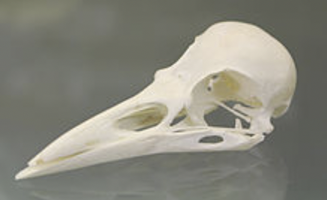

Charles D. Tarlton
Northampton, Massachusetts, USA
There's Talk in the Rookery*
1
Crow
Decided to try words.
— Ted Hughes
Around every bend on every Irish highway this April, the Sycamores and such are filled with the nests of rooks. They look to a New Englander like dark clumps of Mistletoe or the nests high in trees that squirrels make of leaves. But the rook's nests are hardier and made of branches and twigs the birds tear off and weave into roomy baskets in the tops of the trees. Where the rooks have been at work the ground will be littered with rejected twigs and branchlets. As you get closer you can see black silhouettes of birds perched in the nests or coming and going as the sky fills up with the loud cries of rooks in flight and the answering voices from the nests.
there beside the road
they wait while passing cars loosen
the roadkill-cat's flesh
(rooks lack the raptor's sharp, hooked
beak for tearing the meat loose)
sound of a gunshot
and they all fly up at once
hundreds of black rooks
and like a cloud of coal dust
they settle slowly back down
much has been written
albeit symbolically
about rooks' genesis
rising black from fire. They
bow on the branch with each "caw"
2
A-well-a bird bird bird, well-a bird is the word . . .
— The Trashmen
The rook's beak is an extension of its skull's premaxillae** and testifies to a post-Jurassic evolution from what once was, according to some scholarly opinion, a snout. Just as appendages like arms or front feet evolved into the rook's wings, then the bird's pecking can seem isomorphic to a primate's grasping. Rooks were not in at the beginning; but they were structural, kinematic, and neurological possibilities from the very outset. They now live out their genetic standing slowly, taking time to make colonies in the crowns of trees, circling like thunder clouds darkening the sky. "Caw, Caw!"
we came together
through the eons, rooks and us
so rooks can select
the right length of sticks to reach
food at the end of a tube
they live above us
always looking down. There's no
rook can't build a house
when rooks ride the wind like surf
what do they think we're up to?
do they know it's us
the ones killing the world
leaving the poisoned
garbage around, burning up
the forests, blocking the sun?
3
Who’ll read the book?
I, said the rook.
— James Joyce
Through the big windows at the front of the rented Irish cottage on the beach you could see the wind chopping up the sea and whipping the leaves off the cabbage palms. Back across the fields, a little away from the sea, the still leafless Oaks were twisting and bowing in the wind. High up in the highest branches, where the limbs forked, rook's nests swayed and waved, the birds hanging on for life. It was then you realized that while you were inside there watching the storm through glass that was thicker than you'd thought, the rooks were out there in the raw, riding the wind. You can never really know them.
and that's the secret
you can only imagine
in the bird's dark eyes
what they're thinking and feeling
across the distance of wind
they are death on hawks
and gang up to drive them off
the hawk gets confused
they come at him from all sides
he just can't get used to it
but you want to be
let in, to have them explain
their orderly life
how they can live so fully
adjusting themselves to the world
Author's Notes:
*Ann Knickerbocker. Photo of trees with crow’s nests along highway R633 outside the town of Youghal in County Cork, Ireland, 2019.
**A Rook’s Skull.
 |